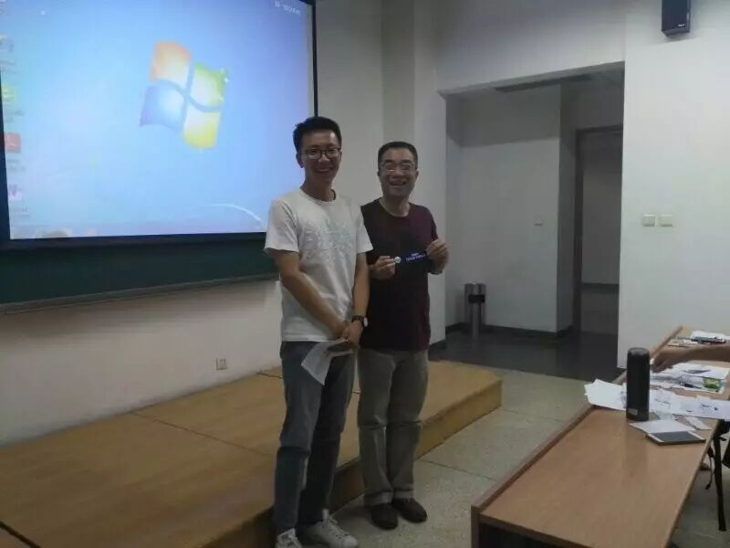
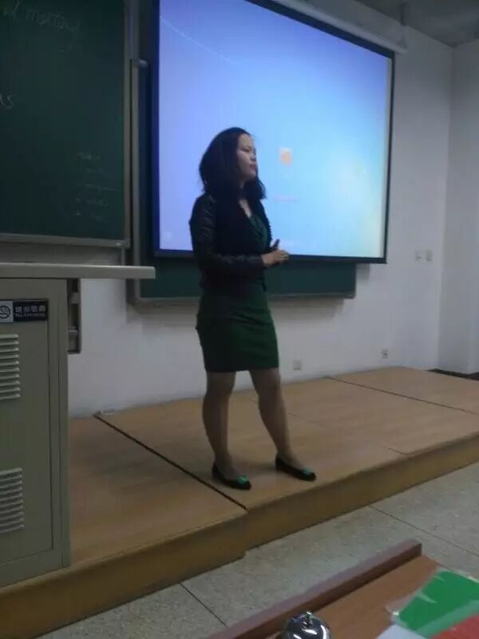
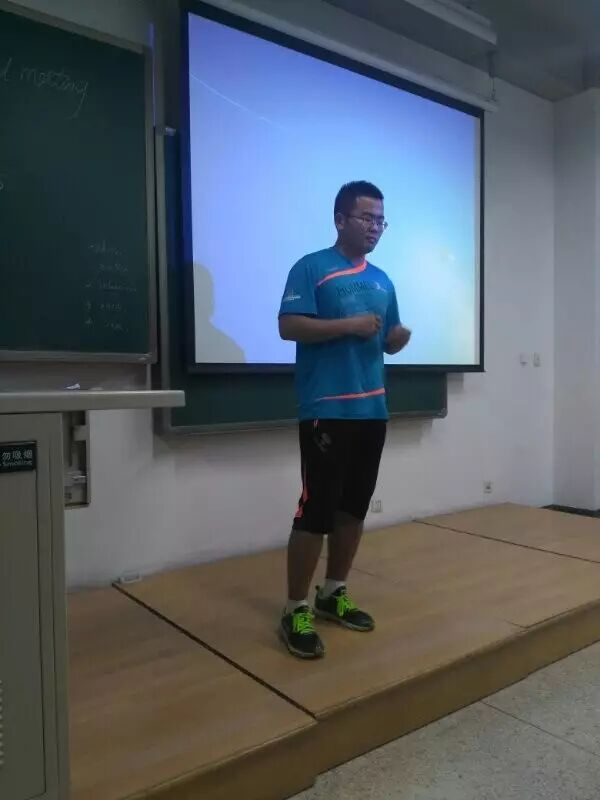
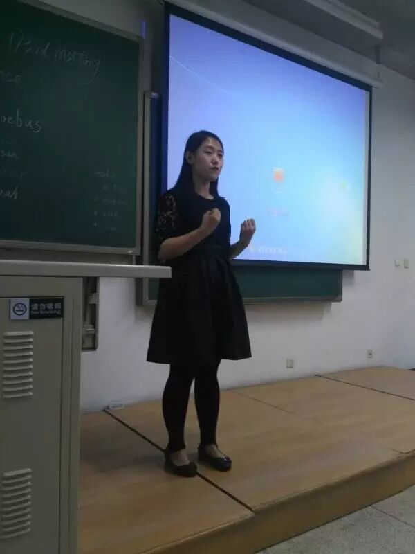
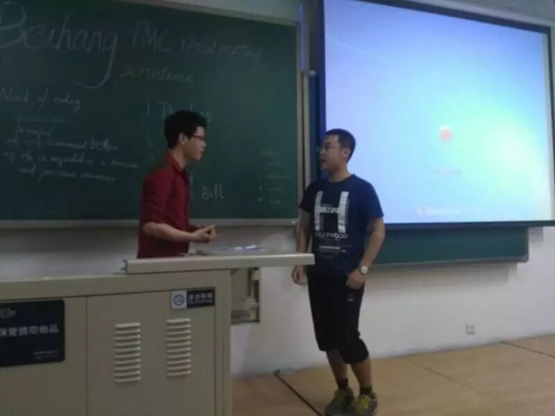
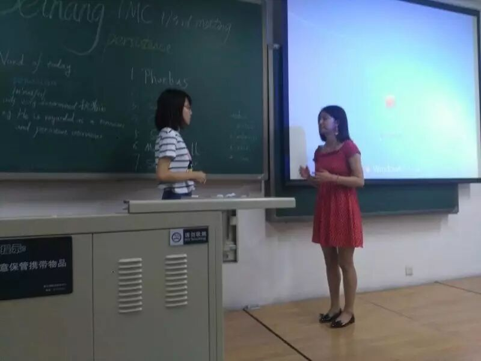
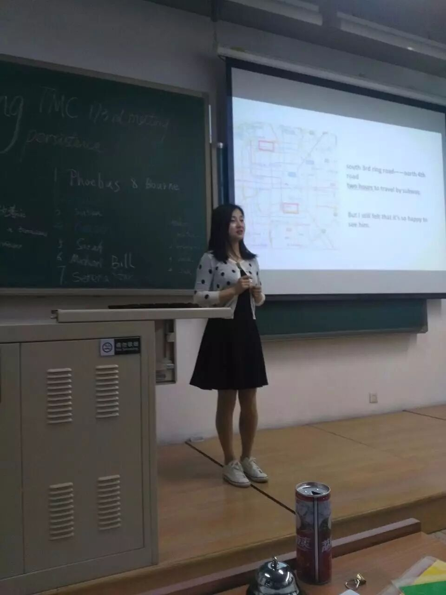
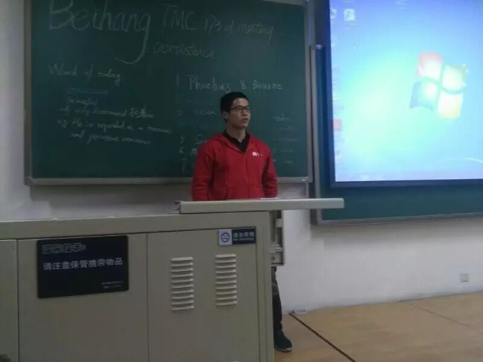
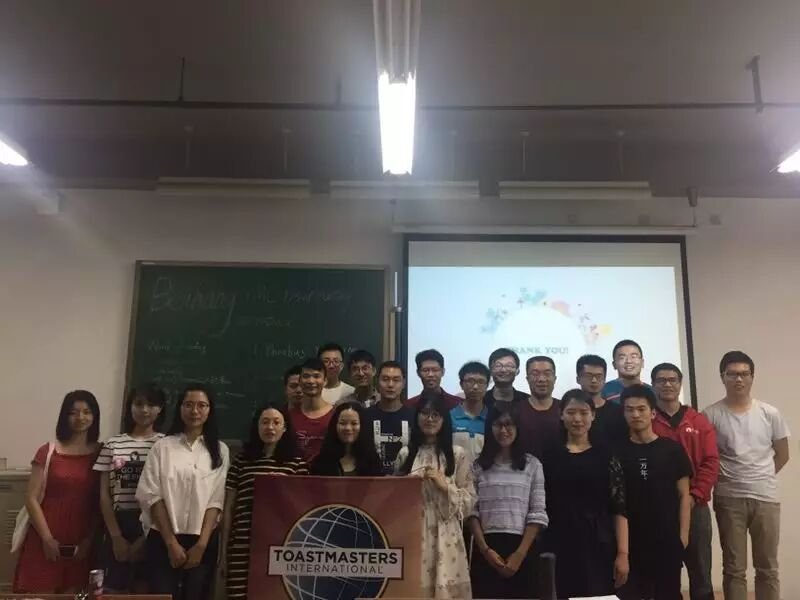

Did you ever persuited something with your tenacious persistence? I did. When I was a child, I was saved money buy toys from one cents to one hundred yuan, or I was persuited one girl...So, I thought I was a tenacious person who have some special persistence than others after that experiences.
But I was wrong when I growed up, if you want to something that you should work hard to get it, no one can changes this rule, it is nature. No pains, No gains!
1) The exams is coming, your best friend complains that he/she can't focus on the book for even for 2 hour, he/she is very anxious, but he/she can still adhere to watch soap for two hour, he/she wants to know why? Can you give him/her some suggestions.

Well, I think this question was so awkward to Phoebus who was married long time, he was used to been a student. He was suggested his best friend to be tough and have persistence, I think he was cheered his best friend up, because he got the Best Topic Speaker title.
2) What makes you insist on loving someone for a lifetime?

Susan was translated this question to what is your reason for your lover, what a clever girl! She said her lover must be deely touched her heart and responsible, good at study and have high education.
3) Have you met this dilema that you don't know whether you should persist on or give up? How did you decide or how will you makes the choice?

Ceasar was told us that he was make choice when he have graduated and have to be a master or not, he said the answer depands on his value, he think be a student is a interest thing in his life.
4) Describe one of your habbits which you have developed for a long time and how it impact you.

Sarah is QiQi's calssmate of senior high school, she have excellent accent of english as same as QiQi, Are your have a same english teacher in your senior high school? Just kidding. Sarah said she was developed a habit is running when she arrived at BeiHang university, if you want to date Sarah, maybe be you can see her on the playground and run...
5) You have persisted on chasing her/him for a long time but she/he always hangs on you, doesn't give you a definite answer, and tonight you must get her/ he yes by anyway you like.

Michael and Bill were very both funned each other, they were took the roles seriously,I think that the serious man is best beaute, how do your think?
6) You are a common person, but you dreamed to become to a super star since childhood, and now you want to your stable and decent job to chase your dream.but your best friend trying persude him to give up his thought.

Serena is Star's classmate and this is her frist time to come BeiHang TMC to be a guest, but they were delivered their wonderful speech to all audiences.
Serena is a girl who have a super star dream and she decided to give up great job, Star told her that she should think about her furture and family, how does she face the problem of furture, and how does she fix the problem of family relationship.
Serena also have a clear mind, she said she will be tenacious to persuit her dream and if her family loves her, she think they will support her to moving on.
Oh my love (Grace CC3)

Grace was perpared to share her story of love, frist she said she was date a boy who met her on ZhiHu, and she was thought he must be a student of Beijing University of Chemical Technology, so she decided met he on her free time, but she always busy.
Finally, she discovered he isn't a student of Beijing University of Chemical Technology and he is a student of BeiHang University.
So, she often go to BeiHang University to meet her boyfriend. What a wonderful story of love!
But she said her boyfriend is BeiHang TMC at last, we all was tricked by her little trick.Do you have fun?
My University (Flair CC3)

Flair is a student of BeiHang University and his university not only have special class, but also have special classmate. He was quitted study when he have graduated from senior high school, because he thought he can be rich without study.
His frist job is a salesman to sale milk and he also traveled to Beijing from Guangzhou province. He will be a good student this time, he don't want to let his family and friends down this time.
We were together tonight, you should be here.
